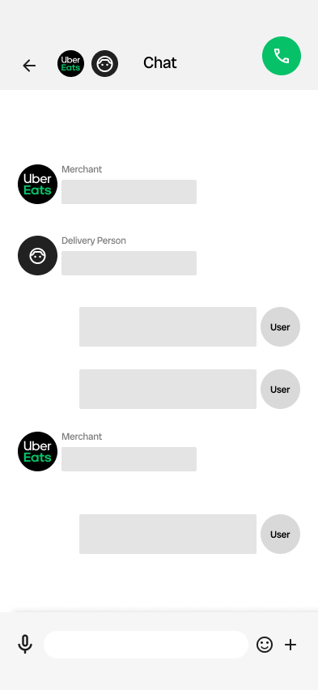
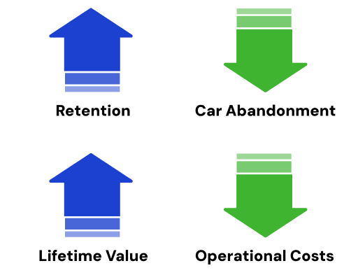

02
Customer Support Functions are Not Visible
How might we establish a transparent communication mechanism within the app that allows users to resolve their needs at any time?
Advice
Establish a direct communication platform so that users can directly contact the merchant or rider, reducing the "contact intermediary". The help page needs to be intuitive so that users can quickly capture the required functions.

1Action
Platform design a three-way communication platform: users, merchants, and riders can communicate directly online. Real Reference Case — China's Meituan Delivery Software.

2Action
The help page should be available on both the home page and the order page. Options:
- Add a help icon to the top right corner of the home page.
- Hover over the help icon so the user can see it wherever they click.
Business Goals, KPI

Collaborative
UI&UX Designer
UX designers are responsible for creating communication platforms and helping with interaction design.
UX ResearchAB testing to see which design users prefer.
Engineering
The front-end is responsible for the interaction with the updated help button.
Product ManagementTo forecast the increase in direct merchant calls and adjust support capacity.